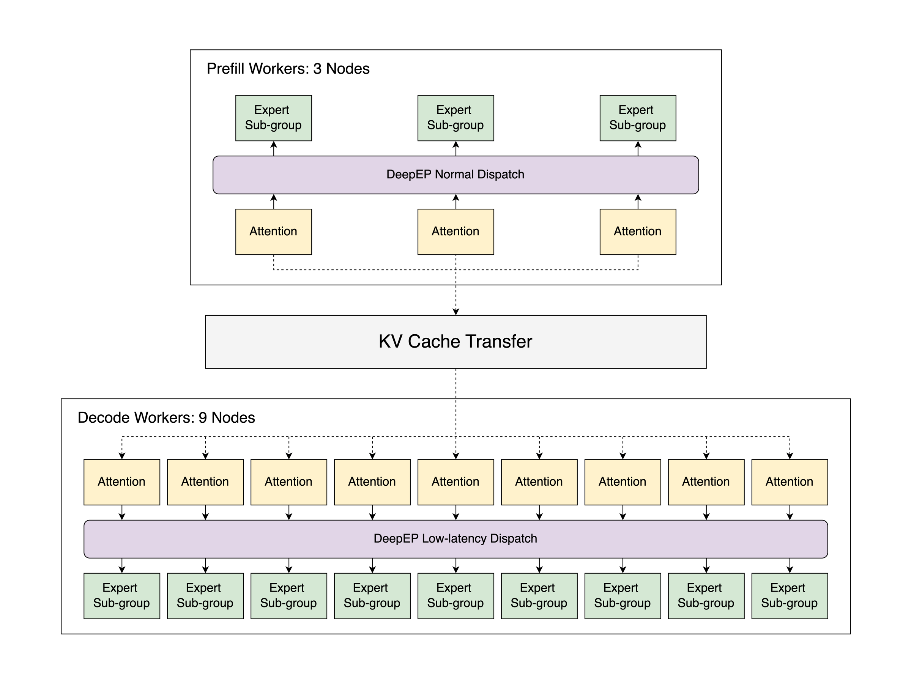
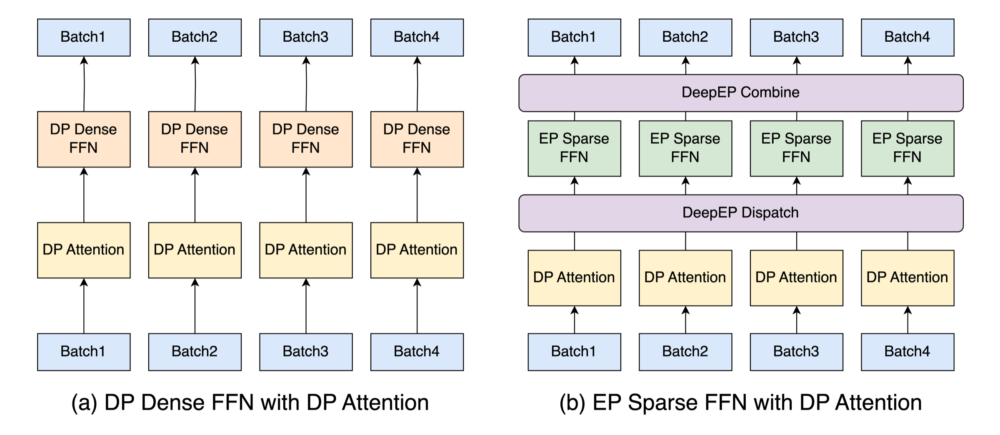
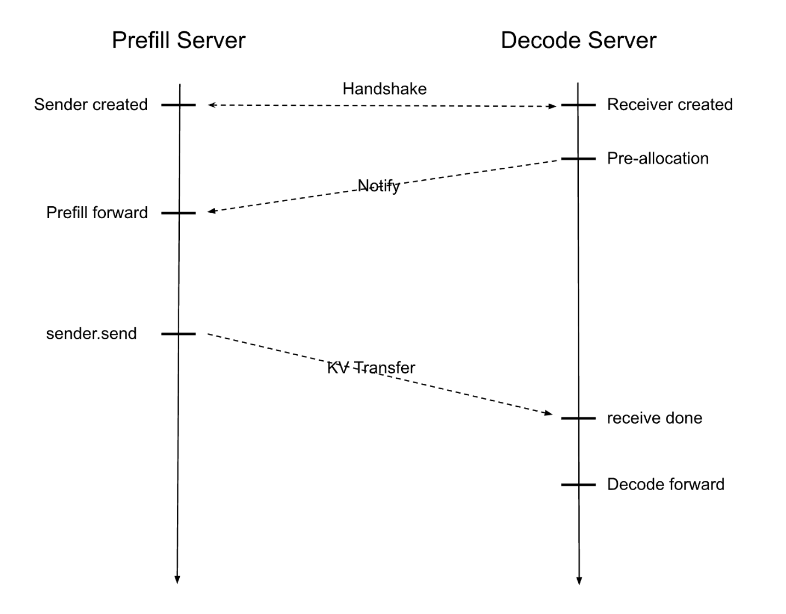
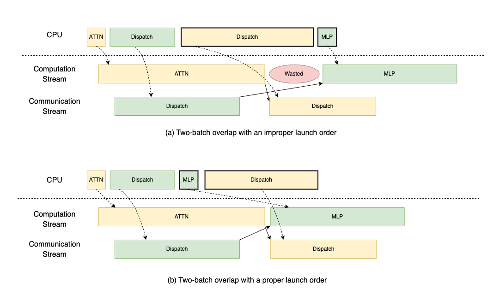
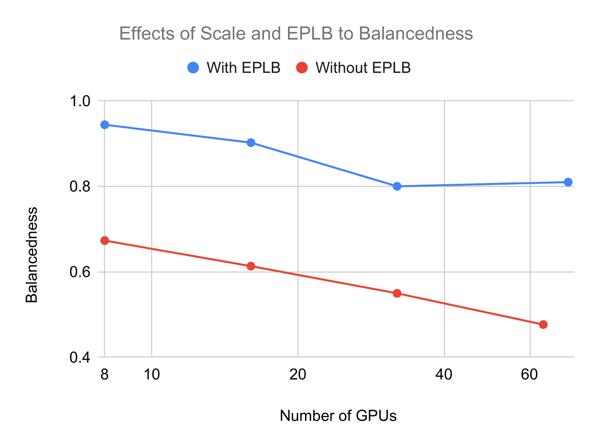
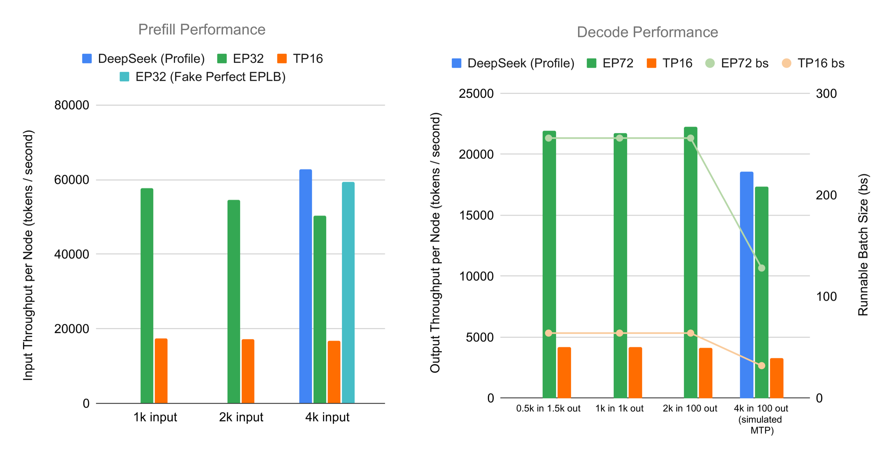

Prefillthroughput first
- 长输入、动态 token 数
- DeepEP normal dispatch
- DeepGEMM contiguous layout
- 通常不依赖 CUDA Graph
真正的答案，是把 DeepSeek-V3 推理拆成一组彼此匹配的系统选择：Prefill 与 Decode 分开，稠密层与稀疏层分开，计算与通信重叠，热点专家动态重排。
Prefill 吃算力、处理长输入；Decode 吃显存带宽、反复读 KV cache。统一调度会让两种工作彼此打断，也无法同时使用 DeepEP 的两套 dispatch 模式。
Attention、Dense FFN、Sparse FFN、LM Head 的权重形态和通信模式不同。SGLang 用 DP 避免 KV 复制和小矩阵碎片，用 EP 分散海量专家权重。
EP 会带来 all-to-all 通信和专家负载不均。TBO 用两个 micro-batch 把计算盖在通信上，EPLB 复制热点专家并周期重排。
Prefill 与 Decode 看起来只是同一次请求的前后半段，放在一个引擎里却会产生三种结构性冲突。
长 prompt 批次进入时，会延后正在逐 token 生成的请求，直接拉高 ITL。
不同 DP worker 同时承担计算强度完全不同的阶段，Decode 会被最慢一侧拖住。
Prefill 适合 normal dispatch，Decode 需要 low-latency dispatch；同一通信组无法同时满足两者。
所以 PD Disaggregation 的意义不只是“分两台服务器”。它建立了一条系统边界，让两侧可以分别选择 batch、通信 kernel、GEMM layout、CUDA Graph 和专家布局。
12 个节点并不做同一件事。Prefill 集群追求吞吐和动态形状，Decode 集群追求低延迟、固定形状和更大的可运行 batch。

原图：3 个 Prefill 节点通过 KV Cache Transfer，把请求交给 9 个 Decode 节点。
DeepSeek-V3 的层类型差异很大。简单把 TP degree 拉高，会把矩阵切得太碎、引入 all-reduce，还可能在 DP Attention 下增加隐藏状态内存。

原图：稠密 FFN 留在每个 DP rank 内，稀疏 FFN 则通过 DeepEP dispatch/combine 跨设备访问专家。
| DeepEP 模式 | 长输入 | 长输出 | DP Attention | CUDA Graph |
|---|---|---|---|---|
| Normal | 适合 | 不适合 | 支持 | 不支持 |
| Low-Latency | 不适合 | 适合 | 支持 | 支持 |
| Auto（统一引擎） | 支持 | 支持 | 冲突 | 支持 |
| PD 分离后 | Normal | Low-Latency | 两侧都支持 | Decode 支持 |

原图：Decode 先预留 KV cache，Prefill 再计算并通过后台 RDMA 路径传输。
Prefill 的 symbolic shape 先经 Triton permutation 转成 contiguous layout；Decode 直接使用固定形状 masked layout。
一个 micro-batch 等通信时，另一个提交 Attention 或 MLP，既隐藏 all-to-all，也把峰值 activation 近似减半。
256 个原始专家加 32 个冗余副本，形成 288 专家池，让热点复制和 EP12、EP72 等布局都成为可能。
DeepEP normal dispatch 即使以异步模式调用，也可能阻塞 CPU 等待跨 rank 元数据。如果先触发 dispatch，再提交计算，GPU 计算流会出现空泡。正确顺序是先把可执行计算推入 GPU queue，再进入 CPU-blocking 通信。

原图：上方错误顺序留下 Wasted 空泡，下方先提交 MLP 后让计算与 Dispatch 重叠。
MoE 的全局速度由最慢 GPU 决定。GPU 越多，某张卡偶然接到大量热点专家 token 的概率越高。EPLB 用工作负载统计决定专家复制和共置，提升平均计算量与最大计算量之比。

原图：不用 EPLB 时，规模从 8 增长到 64 GPU，balancedness 持续恶化；启用后维持在约 0.8 以上。
更大的 batch 会平滑随机路由波动。EP 节省的权重显存，反过来让更大 batch 成为可能。
主存或 mmap 预备权重，DMA 后台拷入 device memory，最后用 device-to-device copy 完成切换。
作者分别把非测试阶段视为“资源无限”，测出 Prefill 与 Decode 的最大承载能力。这更接近容量规划，不等于一个普通在线请求会同时得到这些数字。
单位：tokens / second / node。条长按各阶段图表上界归一化，仅用于感受量级。
Prefill 相对 TP16 的最高提升。理想专家平衡下，距 DeepSeek profile 约 5.6%。
Decode 在 EP72、2K input 下相对 TP16 的提升。大 batch 是主要贡献之一。

原图：EP32/EP72 大幅超过 TP16；理想 EPLB 或模拟 MTP 后，结果接近 DeepSeek profile。
Prefill 同 token 数提升 27%–35%。Decode 在 32 tokens/device 时反而 -27%，到 256 tokens/device 才达到 +25.5%；模拟 MTP 场景为 +35%。
实验中 Prefill 提升 1.49×、Decode 提升 2.54×，但使用了与测试输入匹配的专家分布，线上分布漂移仍未验证。
在复杂 forward 中，activation 的最后一次使用点常常早于 Python 对象生命周期。SGLang 用 Tensor 子类显式释放底层 storage，压低峰值显存。
hidden_state = DisposableTensor(hidden_state)
intermediate = linear1(hidden_state)
hidden_state.dispose() # 最后一次使用后立即释放 CUDA memory
output = linear2(relu(intermediate))工具既能输出累计专家统计，供 EPLB manager 在线更新，也能保存逐 batch 数据。团队可以在 2×8 H100 或 8×H200 上采样，然后模拟 22 节点部署的专家利用率。
更适合批量吞吐，不代表实时交互延迟已经解决。
逐 token 体验仍有继续优化的空间。
更长上下文需要更多资源或不同 KV 管理方案。
尚未与 DP Attention 完整咬合，70% 接受率也是假设。
实验使用 in-distribution 数据，真实线上变化可能要求频繁重排。
当时尚未覆盖 Blackwell；Dense FFN 也缺少介于纯 DP 与纯 TP 之间的灵活 TP size。
这篇博客最值得带走的，不是某个吞吐数字，而是一种系统设计方法：先承认不同阶段、不同层的物理瓶颈不同，再为每个瓶颈选择局部最合适的并行、通信与调度策略。